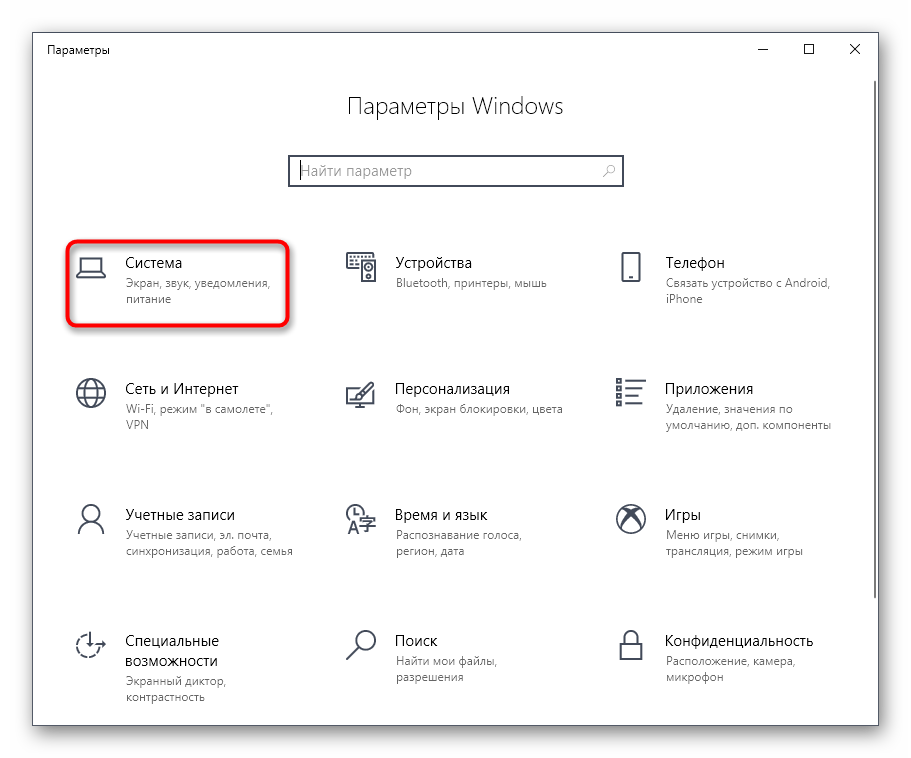

Управление питанием процессора в Windows 10
В операционной системе Windows 10 имеется отдельное меню настроек,
отвечающее за управление питанием. Особенно актуальна эта тема для
обладателей ноутбуков, когда требуется оптимизировать потребление
энергии при работе устройства от батареи. Однако и пользователи
стационарных компьютеров тоже нередко сталкиваются с такой задачей.
Основное влияние на потребление энергии оказывает процессор, поэтому для
оптимизации или настройки максимальной производительности в первую
очередь следует обращать внимание на питание именно этого
комплектующего. Об этом и пойдет рИзменение стандартных параметров плана электропитания
Для начала поговорим о стандартных параметрах планов электропитания.
Как известно, в ОС можно настроить сразу несколько профилей, чтобы
быстро переключаться между ними. Сейчас мы разберем только текущий план,
а вы, отталкиваясь от увиденных инструкций, сможете точно так же
настроить и другие профили, изменяя только значения пунктов, чтобы
создать необходимое питание для процессора.
- Откройте меню «Пуск» и перейдите оттуда в «Параметры», щелкнув по значку в виде шестеренки.
2. Здесь вас интересует категория «Система».

3 Через панель слева переместитесь в «Питание и спящий режим».
4. Отыщите надпись «Дополнительные параметры питания» и кликните по ней левой кнопкой мыши.
5. Отыщите надпись «Дополнительные параметры питания» и кликните по ней левой кнопкой мыши.
6. В открывшемся окне щелкните ЛКМ по «Изменить дополнительные параметры питания».
7. Теперь в появившемся списке вам нужно выбрать раздел «Управление питанием процессора», развернув его.
8. Обратите внимание на находящиеся здесь три пункта «Минимальное состояние процессора», «Политика охлаждения системы» и «Максимальное состояние процессора».
Первый параметр отвечает за минимальную производительность процессора в
процентах. Например, если какое-то приложение будет запущено, то для
него выделятся все мощности комплектующего, чтобы быстро выполнить
задачу. Полной противоположностью является третий параметр, ведь в нем
вы устанавливаете максимально допустимую нагрузку, ограничив тем самым
производительность.
9.
Что касается изменения состояния, то вы самостоятельно задаете
процентное значение, вписывая цифры в специально отведенное поле.
10. Пункт «Политика охлаждения системы» позволит установить, будут ли вентиляторы ускорять свою работу при замедлении быстродействия центрального процессора.
Все остальные настройки плана электропитания в Windows 10 не имеют
никакого отношения к процессору, поэтому мы их пропустим. Однако если вы
хотите их изменить, сначала наведите курсор на пункт, чтобы
отобразилась всплывающая подсказка. Там вы сможете узнать, за что
отвечает конкретный параметр.
Включение дополнительных параметров
По умолчанию один важный параметр питания процессора в рассмотренном
выше меню не отображается, хотя он может быть полезен ряду
пользователей. Эта настройка отвечает за ограничение частот процессора,
то есть если их понизить, потребление энергии значительно снизится, но
вместе с этим упадет и производительность. В случае заинтересованности
данным параметром выполните следующие действия:
- Откройте утилиту «Выполнить», зажав комбинацию клавиш Win + R. Введите там
regedit и нажмите на Enter.
2. Перейдите к HKEY_LOCAL_MACHINE\SYSTEM\CurrentControlSet\Control\Power\PowerSettings\54533251-82be-4824-96c1-47b60b740d00\75b0ae3f-bce0-45a7-8c89-c9611c25e100, вставив этот путь в адресную строку
3. В корне конечной директории отыщите параметр «Attributes» и дважды кликните по нему правой кнопкой мыши.
4. Откроется окно свойств, где следует изменить значение на 2.
После этого настройка будет применена автоматически, однако в некоторых
случаях это происходит только после перезагрузки операционной системы.
5. Закончив с этим, снова перейдите к настройкам плана электропитания
так, как это показано в предыдущей инструкции. Кликните по надписи «Изменить дополнительные параметры питания».

6. Отыщите в «Управление питанием процессора» пункт «Максимальная частота процессора» и раскройте его для изменения значения.
7. Выставьте необходимое ограничение. Учитывайте, что здесь оно вводится в
МГц, а во всех программах и Диспетчере задач скорость отображается в
ГГц. То есть вам необходимо прописать, например, 1500 МГц, чтобы
установить ограничение до 1.5 ГГц.
8. После внесенных изменений предлагаем проверить их действенность.
Щелкните ПКМ по пустому месту на панели задач и в появившемся
контекстном меню выберите пункт «Диспетчер задач».
9. Переместитесь на вкладку «Производительность».
10. Обратите внимание на показатель скорости процесса, чтобы убедиться в том, что установленное ограничение работает.
Если этот пункт в настройках плана электропитания вам больше не будет нужен, просто скройте его, установив значение 1 в рассмотренном только что параметре редактора реестра.
Использование командной строки
Некоторым пользователям проще управлять компьютером, вводя команды в
консоли. Настроить питание процессора тоже можно в этом приложении. Для
этого понадобится выполнить всего пару простых действий и освоить
несколько команд.
- Для начала запустите консоль от имени администратора. Сделать это можно, например, через меню «Пуск».
2. Введите powercfg /query, чтобы просмотреть все доступные настройки питания.

3. Обратите внимание на представленные строки — там указано название
параметра, которое отображается в графическом меню. Здесь вам нужно
запомнить «Псевдоним GUID» и «Текущий индекс настройки питания».
По первому значению будет производиться изменение, а второй отвечает за
текущую конфигурацию. 64 на конце означает 100%, а 00 — отсутствие
ограничений.
4. Теперь осталось только ввести, например, powercfg /query SCHEME_CURRENT SUB_PROCESSOR PROCTHROTTLEMAX 100, где SCHEME_CURRENT — текущий профиль электропитания, SUB_PROCESSOR — GUID раздела «Управление питанием процессора», а PROCTHROTTLEMAX — псевдоним самого параметра.
Меняйте все значения и псевдонимы на необходимые, чтобы успешно
управлять значениями. Если вдруг при вводе команды возникнет какая-то
ошибка, на экране отобразится отчет с рекомендациями по исправлению
ситуации, что поможет разобраться с данной операцией даже начинающему
пользователю.
Это были все сведения о настройке питания процессора в операционной
системе Windows 10, о которых мы хотели рассказать. Не забывайте, что
любые изменения как-то отражаются на быстродействии и энергопотреблении,
поэтому производите конфигурацию с умом.